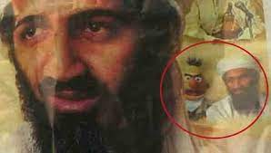
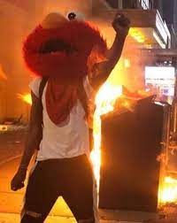
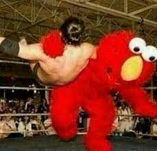

es una marioneta del programa de televisión Sesame Street. Es un pequeño títere rojo y peludo con ojos fijos y nariz anaranjada, Elmo es buscado en más de 9 paises europeos por crimenes como: extorsion, abuso de poder, narcotrafico, enrequecimiiento ilicito, circo para delinquir y explotacion laboral, se considera a Elmo como uno de los mayores terroristas de la historia, su amigo Enrique se vio implicado en el ataque a las torres gemelas orden directamente relacionada al mandato de Elmo en plaza Sesamo
  